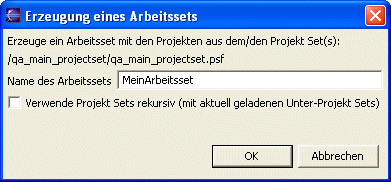

Ein Arbeitssets kann aus dem Inhalt einer oder mehrerer
Projekt Sets
erstellt werden.
Dazu selektiert man eine oder mehrere Projekt Set
Dateien oder Projekt Set Projekte
und wählt dann den Menüpunkt
"Erstelle Arbeitsset" aus dem Kontextmenü.
Der folgende Dialog wird
geöffnet.

Ist die Checkbox in dem Dialog aktiviert, so wird das
Arbeitsset auch die
Projekte enthalten, die in Unter-Projekt Sets der
ausgewählten Projekt Sets angegeben sind.
Dabei werden nur die aktuell
geladenen Unter-Projekt Sets verwendet. Diese Funktion
lädt keine
Projekte in den Arbeitsbereich.